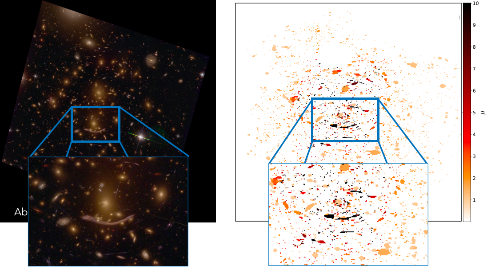
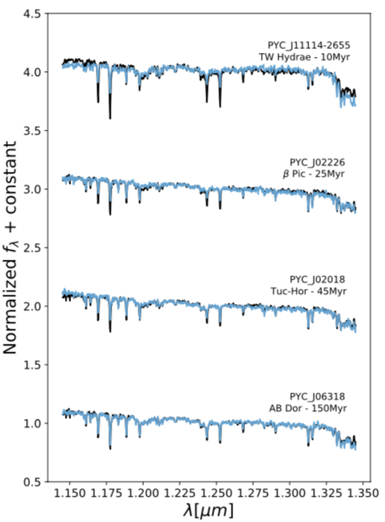

I'm a PhD Student
- Name: Adina D. Feinstein
- Job: Graduate Student
- Residence: United States
- Hometown: Muttontown
Hi! I am a first year graduate student in the Astronomy & Astrophysics Department at the University of Chicago. I received my undergraduate degree in Astrophysics from Tufts University. Outside of academics, I have an addiction to baking, love crocheting, writing short stories, and sitting out by Lake Michigan. My work focuses on stellar and exoplanet astrophysics.
My Skills
Python
Folded-port InfraRed Echellette (FIRE) Spectrograph
Magellan Telescope, Las Campanas Observatory
SpeX Spectrograph
NASA Infrared Telescope Facility
My Education
-
University of Chicago
Masters Degree 2018-Current- Master's Thesis: eleanor: An open-source tool for extracting light curves from the TESS Full-Frame Images
- GPA: 4.0/4.0 -
Tufts University
Bachelors Degree 2014-2018- Senior Honors Thesis: Exoploring the Low and High Mass Extremes in the Distant Universe
- Astrophysics Major (GPA: 3.71/4.0)
- English Minor -
Jericho High School
2010-2014
My Experience
-
Graduate Research Assistant
Advisors: Benjamin Montet & Jacob Bean- Creating an open-source data analysis pipeline to produce light curves for roughly 25 million stars in the Transiting Exoplanet Survey Satellite (TESS) Full-Frame Images (FFIs)
- Publicly available light curves are tailored towards finding exoplanet transits and will be hosted on the MAST serves at the Space Telescope Science Institute as High Level Science Products (HLSP)
- Updates on the open-source pipeline can be found on my github: https://github.com/afeinstein20/eleanor -
Undergraduate Research Assistant
Advisor: Danilo Marchesini- Constructed catalogs of gravitational lensing magnifications using publicly available lensing models for Hubble Frontier Fields cluster pointins; Completed a statistical analysis of systematic and random errors; Catalogs can be found here: https://cosmos.phy.tufts.edu/~danilo/HFF/Home.html
- Conducted a brief study on the evolution of high mass (log(M/M_Sun) >= 11) high redshift (2 < z < 6) galaxies using the Ultra Deep Survey with the VISTA telescope (UltraVISTA) Survey -
Summer Research Assistant
Advisor: Joshua Schlieder- Determined spectral types and ages of red dwarfs in the solar neighborhodd using SpeX, a medium resolution 0.7-5.3 micron spectrograph mounted on the NASA Infrared Telescope Facility
- Calculated basic planet and stellar parameters from Kepler/K2 light curves and stellar spectra
- Conducted planet confirmation follow-up analysis for a temperature 1.9 R_Earth planet identified by citizen scientists using the Exoplanet Explorers tool on the Zooniverse platform
My Talks & Posters
-
TBD
TASC Workshop July, 2019 Boston, MA- Invited talk
-
Software demonstration of eleanor
TESS Data Workshop February, 2019 Baltimore, MD- Invited talk
-
A Complete Survey of the Southern Sky with TESS Full-Frame Images
233 AAS Meeting January, 2019 Seattle, Washington- Selected speaker for the TESS Special Session
- Poster presentation (140.14); Chambliss Medal for outstanding poster presentation -
K2-136: A binary system in the Hyades open cluster hosting a Neptune-sized planet
231 AAS Meeting January, 2018 Washington, D.C.- Session 104. Detection of Extrasolar Planets I
My Publications
-
2019 - Present
- Feinstein, A. D., Montet, B. T., Foreman-Mackey, D., et al. 2019, eleanor: An open-source tool for extracting light curves from the TESS Full-Frame Images. arXiv e-prints arXiv:1903.09152
- Gunther, M. N., Pozuelos, F. J., Dittmann, J. A., et al. 2019, A Super-Earth and two sub-Neptunes transiting the bright, nearby, and quiet M-dwarf TOI-270. arXiv e-prints, arXiv:1903.06107
- Feinstein, A. D., Schlieder, J. E., Livingston, J. H., et al. 2019, K2-288Bb: A small temperate planet in a low-mass binary system disvered by citizen scientists. Astrophysical Journal, 157, 40
-
2018 - 2019
- Ciardi, D. R., Crossfield, I. J. M., Feinstein, A. D. et al. 2018, K2-136: A binary system in the Hyades open cluster hosting a Neptune-sized planet. Astrophysical Journal, 155, 10
- Yu, L., Crossfield, I. J. M., Schlieder, J. E., et al. 2018, Planetary Candidates from K2 Campaign 16. Astrophysical Journal, 156, 22
- Shipley, H. V., Lange-Vagle, D., Marchesini, D., et a. 2019, HFF-Deepspace photometric catalogs of the twelve Hubble Frontier Fields, clusters, and parallels: Photometry, photometric redshifts, and stellar masses The Astrophysical Journal Supplement Series, 235, 14
- Crossfield, I. J. M., Guerrero, N., David, T. et al. 2018, A TESS dress rehearsal: Planetary candidates and variables from K2 Campaign 17. The Astrophysical Journal Supplement Series, 239, 5
My Outreach
-
Adler After Dark: Geek Chic
March, 2019 Chicago, IL- Soapbox Science volunteer
-
Chicago Astronomical Society
March 12, 2019 Chicago, IL- Invited talk about how to find and characterize exoplanets with a specific emphasis on K2-288Bb
-
Letters to a Pre-Scientist Volunteer
2018 - 2019 -
Skype a Scientist Volunteer
2018 - 2019
My Research
-

-

-
 View Project
View Project
Citizen Scientists help discover K2-288Bb
Observations from the Kepler and K2 missions have provided the astronomical community with unprecedented amounts of data to search for transiting exoplanets and other astrophysical phenomena. Here, we present K2-288, a low-mass binary system (M2.0 +/- 1.0; M3.0 +/- 1.0) hosting a small (Rp = 1.9 REarth), temperate (Teq = 226 K) planet observed in K2 Campaign 4. The candidate was first identified by citizen scientists using Exoplanet Explorers hosted on the Zooniverse platform. Follow-up observations and detailed analyses validate the planet and indicate that it likely orbits the secondary star on a 31.39-day period. This orbit places K2-288Bb in or near the habitable zone of its low-mass host star. K2-288Bb resides in a system with a unique architecture, as it orbits at >0.1 au from one component in a moderate separation binary (aproj approximately 55 au), and further follow-up may provide insight into its formation and evolution. Additionally, its estimated size straddles the observed gap in the planet radius distribution. Planets of this size occur less frequently and may be in a transient phase of radius evolution. K2-288 is the third transiting planet system identified by the Exoplanet Explorers program and its discovery exemplifies the value of citizen science in the era of Kepler, K2, and the Transiting Exoplanet Survey Satellite. Read the rest of our paper on the ArXiv!
-
 View Project
View Project
eleanor: A tool for FFI light curve extraction
Currently, at the University of Chicago, I am developing an open-source Python package, called eleanor, whcih can be used to explore the Transiting Exoplanet Survey Satellite (TESS) Full-Frame Images (FFIs). I will be using this package to create light curves for all sources in the TESS Input Catalog for Tmag < 16, for which 1% photometry is achievable. These sources will be hosted on both the MAST and Exo-Fop TESS servers as Community TESS Objects of Interst (CTOIs; links will be provided once TESS data is released). Members of the astronomy community will be able to install eleanor on their personal machines to use our visualization and analysis tools (example above). Users will also be able to create custom light curves for sources either fainter than Tmag = 16 or for sources not in the TESS Input Catalog. You can follow my progress on GitHub! The documentation for eleanor can be found here. Examples of what one can do with eleanor can be found using that link as well. Find our paper describing eleanor on the ArXiv! We're getting ready to send our light curves to MAST very shortly, so stay tuned...
Contact Me
5640 S Ellis Ave
Chicago, IL 60637
 https://orcid.org/0000-0002-9464-8101
https://orcid.org/0000-0002-9464-8101